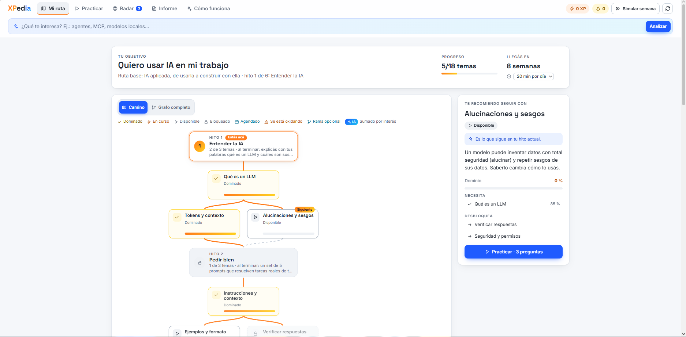
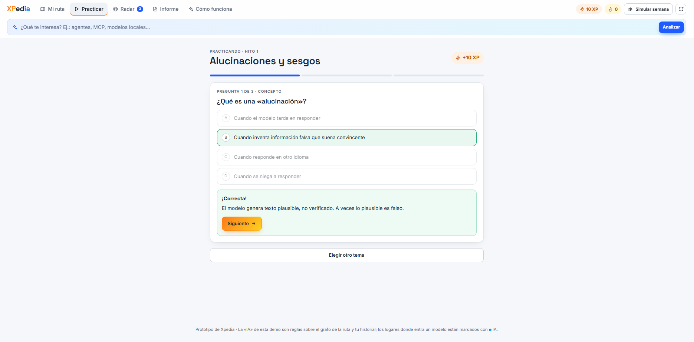
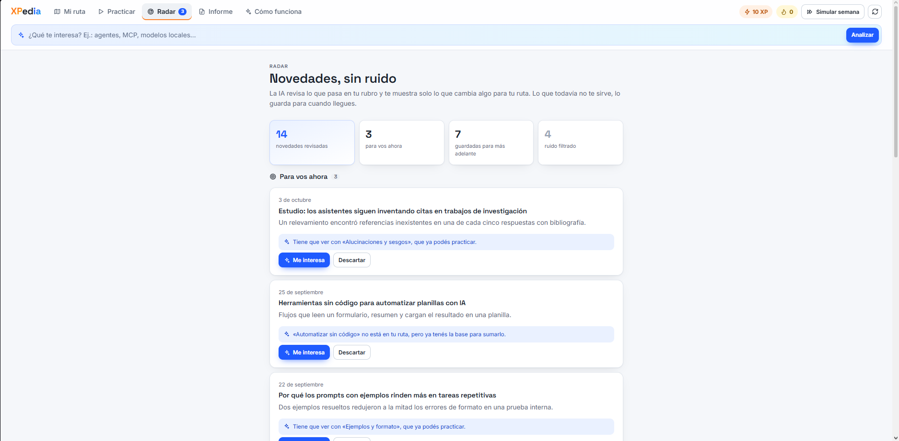
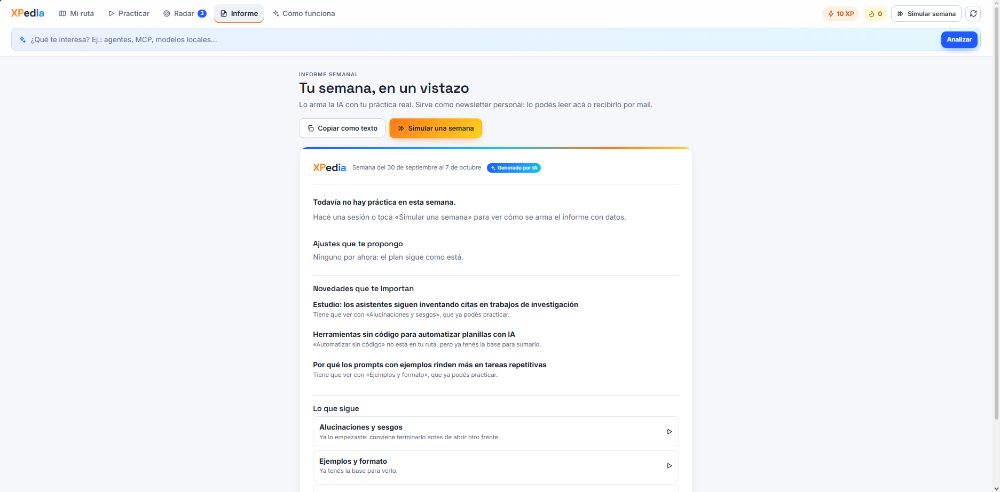
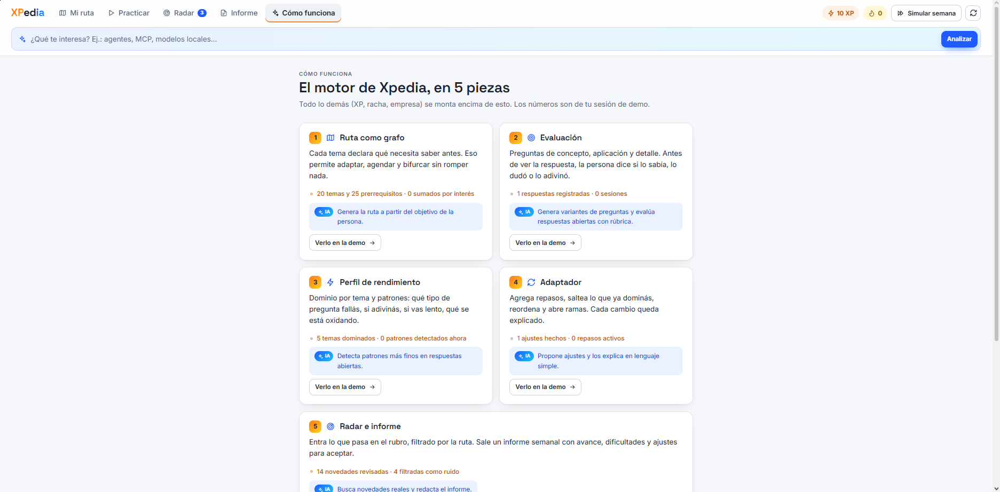

Plan
Tu camino hacia una meta concreta. Se acomoda a cómo te va.
Para mejorar en lo que hacés o pasarte a otro rubro. Paso a paso, practicando de verdad.
Por ejemplo
Quiero pasar de gastronomía a tecnología
Ruta: Desarrollo web desde cero2Qué es
Un plan, práctica y una forma de demostrar lo que aprendiste.
Tu camino hacia una meta concreta. Se acomoda a cómo te va.
¿Qué es una «alucinación» en un modelo de IA?
Probala.
Ejercicios cortos y casos reales. Se aprende haciendo.
Pruebas por hito y un portfolio para mostrar lo que sabés.
3Cómo funciona
Tocá cada una para ver qué hace.
Cada tema sabe qué necesitás antes. Así la ruta puede cambiar sin romperse.
Antes de ver la respuesta, contás si lo sabías, lo dudaste o lo adivinaste.
Qué dominás, qué te cuesta y qué se te está olvidando.
Suma repasos o saltea lo que ya sabés. Y te dice por qué.
Las novedades que te importan y un resumen de tu semana.
4La app
Capturas del prototipo.





Tu mapa de hitos.
5Video